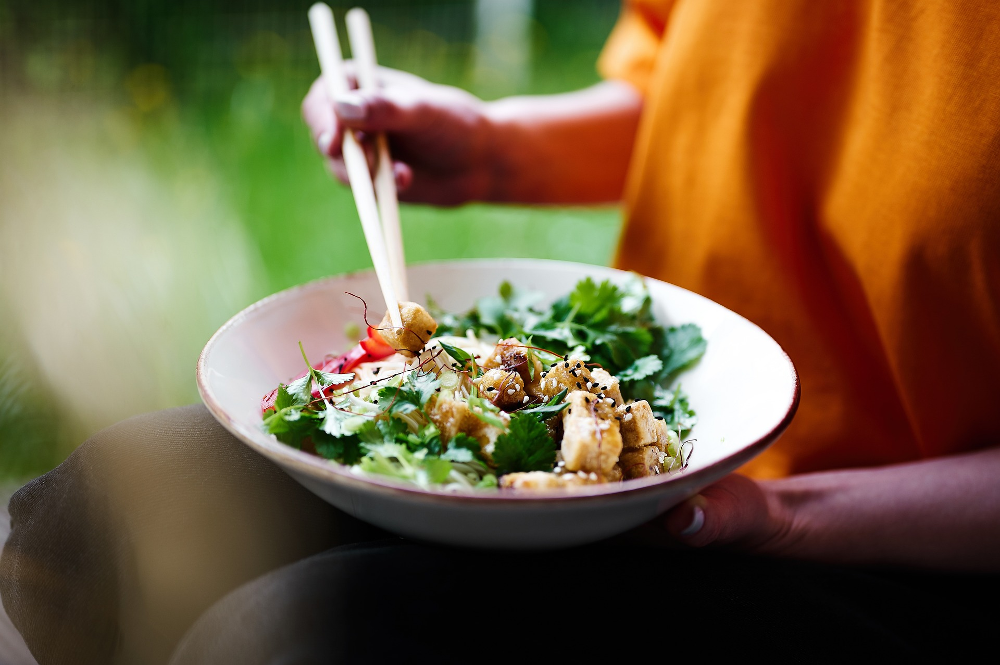

Nutrición
Nos encargamos de crear y desarrollar planes de alimentación. Te orientamos y enseñamos sobre cómo adoptar hábitos alimentarios saludables y te preparamos programas para tus necesidades concretas
4R para el post entrenamiento

Recarga con hidratos de carbono, Repara con proteínas, Rehidrata con agua y/o bebidas isotónicas dependiendo las circunstancias, Relaja descansando, durmiendo mínimo 8 horas. La nutrición juega un papel fundamental en todos los aspectos de nuestra vida. Pero es aún más importante en la recuperación tras el esfuerzo y llegar en plena forma al siguiente entrenamiento o partido.
Nutrición Deportiva

Te guíamos para saber qué, cuándo y por qué se deben comer y beber ciertos alimentos u otros según el deporte y la actividad física que realices. La nutrición deportiva, junto con el descanso y el trabajo físico es uno de los factores que más influye en el rendimiento físico de un atleta. Gracias a ella podemos mejorar significativamente tanto el rendimiento como la recuperación.
Procesados y ultraprocesados

Volvé a la comida hecha en casa, moderá el consumo de los alimentos procesados y evitá el consumo de productos ultraprocesados. Los alimentos procesados industrialmente, las bebidas azucaradas y la comida rápida están desplazando a las dietas tradicionales más nutritivas, lo que genera efectos alarmantes en la salud. Los expertos señalan que se necesita regular el mercado para revertirlo.
Tips saludables

Conocé cómo mejorar tu calidad de vida y la de tu familia. Llevar una dieta equilibrada y sin excesos es una de las claves para tener una vida sana. Mejorar esta situación es muy fácil, solo es cuestión de informarse correctamente. Estar sanos depende de cada uno y del modo en que cuida el cuerpo. Es clave realizar actividad física, descansar bien y mantener un plan alimentario abundante y variado.
¿Es mejor comer las frutas y verduras con o sin la piel?
La Organización Mundial de la Salud recomienda la ingesta de 400gr. al día ya que son fuentes ricas en vitaminas, minerales y fibra. Hay nutrientes importantes en la piel. Y, lo que es más, las cáscaras de frutas y verduras desechadas contribuyen al cambio climático. facilitar el tránsito intestinal a través del consumo de una mayor cantidad de fibra, estaríamos contribuyendo a prevenir y mejorar patologías claves para la salud.
¿Qué es hoy en día comer sano o equilibrado?
Según la ley, "alimentación sana" es aquella basada en criterios de equilibrio y variedad, y de acuerdo con las pautas culturales de la población, que aporta una cantidad suficiente de nutrientes esenciales. Por eso, es importante elegir alimentos variados, frescos y naturales como: frutas y verduras que aportan fibra, vitaminas y minerales. En la selección de los alimentos y la organización de las comidas influyen la historia, la cultura y el medio ambiente.
Alimentación saludable ¿a qué nos referimos?
Seguramente, muchas veces, escuchaste hablar sobre la importancia de llevar una alimentación saludable y equilibrada para mantener tu salud, pero.. ¿A qué nos referimos cuando hablamos de alimentación saludable?
No se trata de seguir una dieta específica, sino de adoptar buenos hábitos que perduren en tu vida y que satisfagan las necesidades nutricionales de cada uno. Si lo conseguís, no solo te ayudará a estar mejor físicamente, sino que también te hará sentir mejor anímicamente.